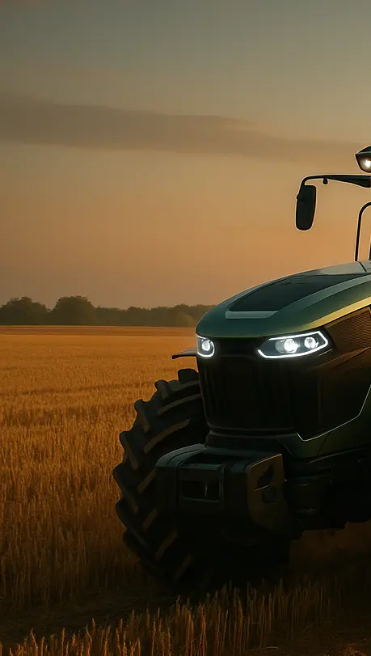
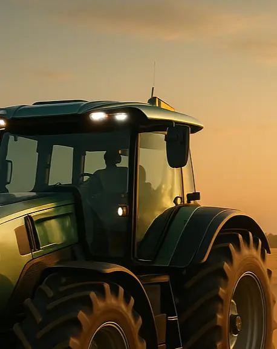
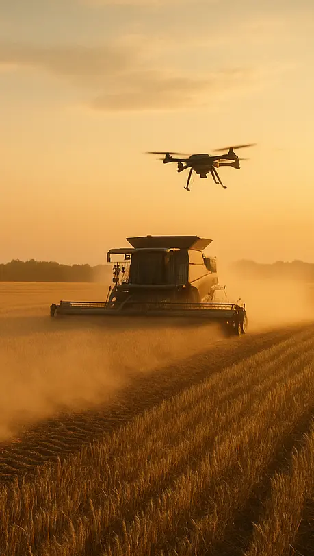

Engineering the
Future of Agriculture
Empowering farmers and agribusinesses worldwide with intelligent machinery, precision systems, and sustainable engineering, designed to make every harvest more productive, efficient, and profitable.
Who We Are.
Built for Farmers.
Driven by Innovation.
At DartAgro Systems, we combine decades of engineering expertise with next-generation technology to create machinery that transforms how the world farms. From autonomous tractors to AI-powered irrigation and smart harvesters, we design tools that work harder, think smarter, and last longer.
precision power for every farm.



Technology & Innovation
Smart Technology Meets Solid Engineering.
We’re redefining agriculture through technology — integrating IoT connectivity, automation, and AI-driven analytics into every machine. Our systems collect real-time field data, analyze performance, and help farmers make informed decisions that increase output while conserving resources.

Autonomous Operations
Self-driving tractors for 24/7 precision.
IoT Integration
Monitor and control equipment remotely.
AI Analytics
Predictive insights for better yield and resource use.
Green Engineering
Lower emissions, higher efficiency.
Sustainability Commitment
Powering a Greener Future for Global Agriculture.
Sustainability is at the heart of everything we build. Our R&D teams are constantly innovating to minimize fuel use, reduce emissions, and design eco-efficient machinery. Because the future of farming must be as sustainable as it is productive.
Reduced Carbon Footprint
Our machines are engineered for efficiency — from advanced hybrid engines to precision farming systems that cut fuel waste. Every design decision aims to lower emissions, minimize resource use, and help farmers achieve more with less impact on the planet.

Recyclable Materials
We prioritize circular design by using recyclable metals, composites, and eco-friendly components across our equipment line. This ensures durability during use and responsible recovery at the end of each machine’s lifecycle.

Renewable Energy Usage
Our facilities and manufacturing lines integrate renewable energy sources like solar and wind power. We’re steadily reducing our dependence on fossil fuels while moving toward a fully sustainable production ecosystem.

Global Presence
Trusted by Farmers in 40+ Countries.
Our machines power some of the world's most productive farms—from vast wheat fields in North America to rice paddies in Asia and maize plantations in Africa. Wherever food is grown, DartAgro technology helps it thrive.
News & Insights
The Future of Farming, Engineered Today.
Explore our latest innovations, industry insights, and global projects driving the next era of agricultural transformation.
Introducing the AgriMach A9 Autonomous Tractor
The next generation of precision farming featuring AI navigation, real-time soil analytics, and zero-emission hybrid power. Built to work smarter, longer, and cleaner.
Smart Irrigation Pilot Cuts Water Use by 37%
DartAgro's intelligent irrigation system helps farmers save water and increase yield using data-driven precision and adaptive moisture control.
DartAgro Partners with Global AgTech Forum 2025
Together with international experts, we're advancing automation, sustainability, and the digital transformation of global agriculture.
DartAgro Opens Carbon-Neutral Factory in Europe
Our newest production facility runs entirely on renewable energy—setting a new benchmark for sustainable manufacturing in the agri-tech industry.
Nebraska GreenField Farms Boost Output by 28%
With AgroMach's A9 fleet and smart monitoring, GreenField Farms transformed productivity while cutting operational costs and emissions.


Let's Build the Future of Farming Together.
Whether you're a farmer, distributor, or partner — we're here to help you achieve more with technology that works smarter and lasts longer.
Request a Quote